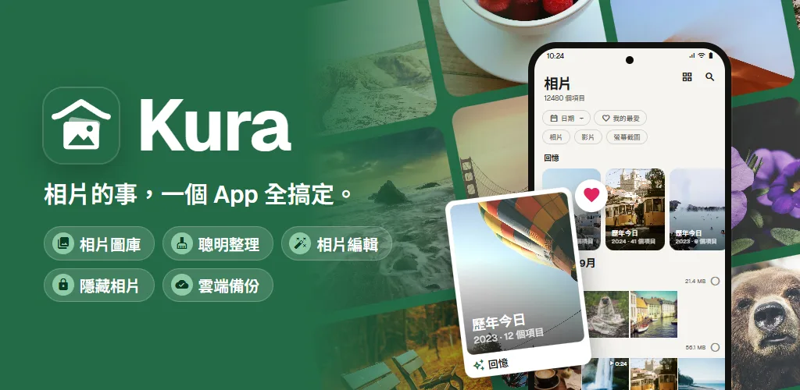
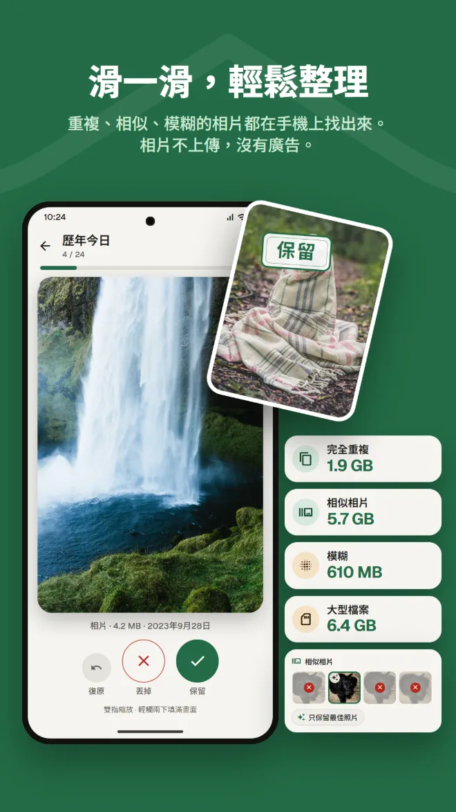
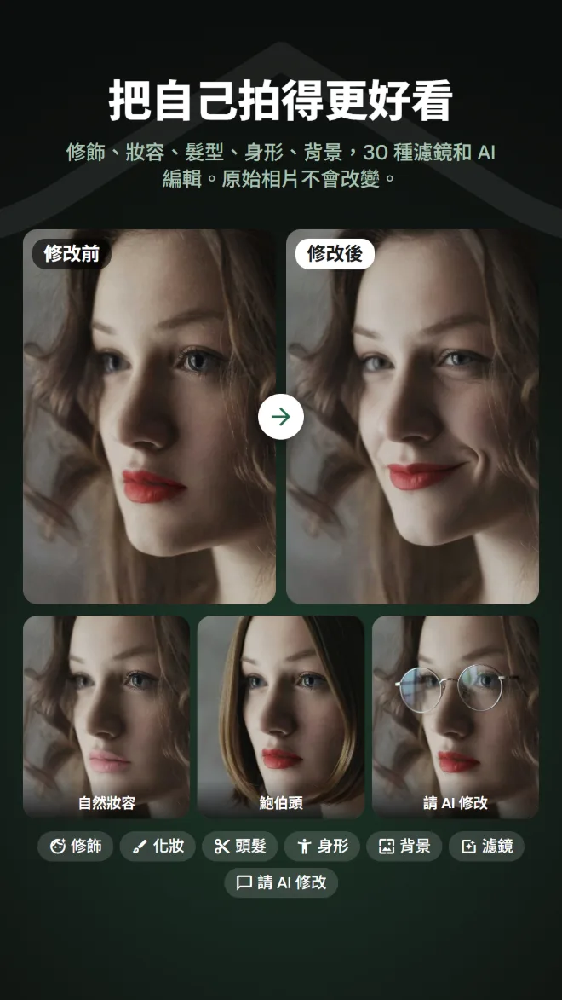
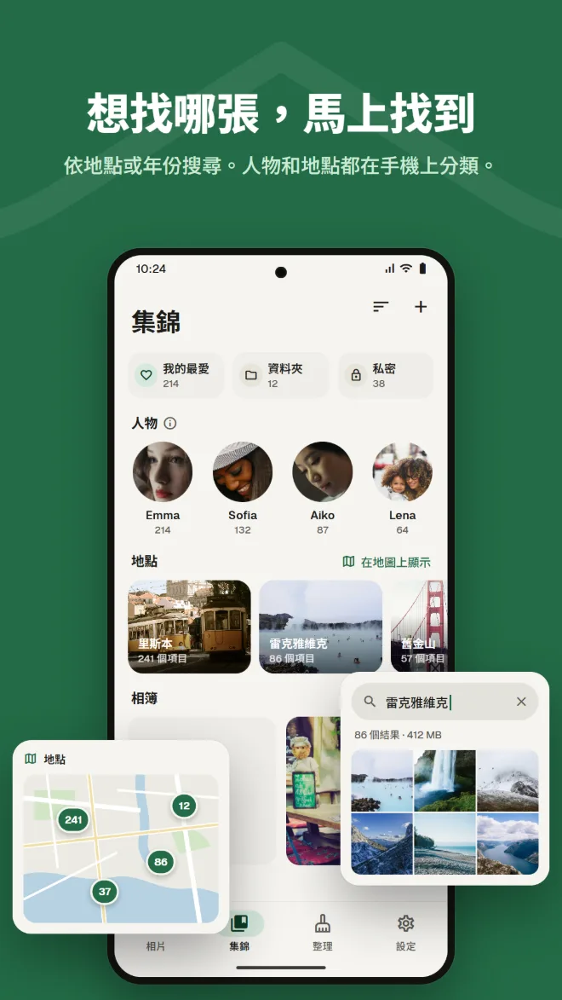
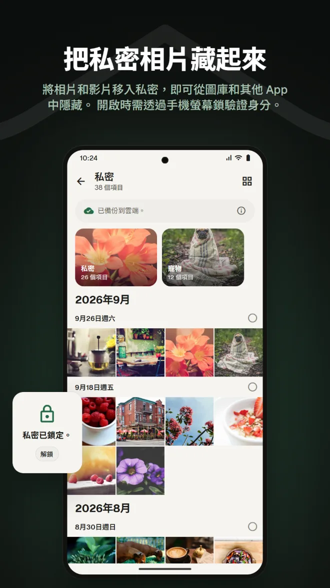
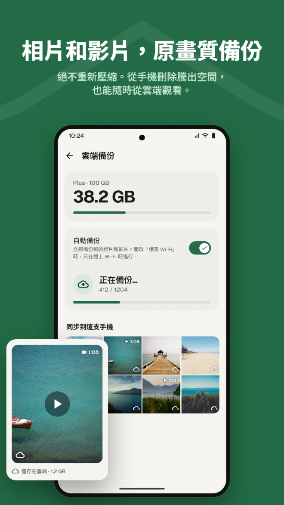
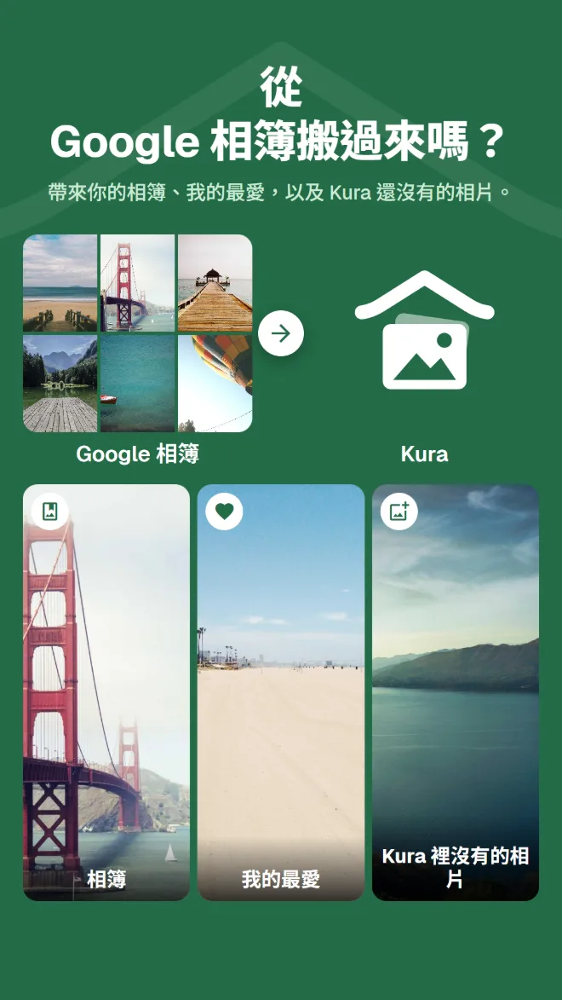

依內容搜尋
依地點、相片內容或相片中的文字找相片。
圖庫、清理、AI 編輯、私密、備份，以及從 Google 相簿搬移。有了 Kura，不必再為每件事各裝一個 App。
Android 11 以上 · 瀏覽、整理和刪除都免費 · 使用 Google 帳戶登入

看相片用圖庫，騰空間用清理 App，修圖再換一個 App，備份又是另一個服務。每切換一次，就得重新找一次同一張相片。
Kura 在一個圖庫裡全部搞定。
同一批相片，在同一個地方查看、清理、編輯和備份。
從圖庫到清理、編輯、搬移和備份，一次看完。
Kura 在手機上找出完全重複、相似相片、模糊相片和大型檔案。向右滑動保留，向左滑動丟掉，能釋出多少空間一眼就知道。

修飾、塑形、妝容、頭髮和背景，還有 30 種濾鏡、調整和裁切。美食濾鏡讓料理更誘人，身形工具調整全身比例。一律另存副本，原始相片保持不變。

依日期排列的格狀檢視，還有往年同一天的回憶。可依地點、相片內容或相片中的文字搜尋，臉孔會在手機上依人物分組。

將相片和影片移入私密，即可從圖庫和其他 App 中隱藏。開啟時需透過手機螢幕鎖驗證身分。

相片和影片不重新壓縮，原樣備份。從手機刪除已備份的副本以釋出空間，仍可在雲端查看。

只要從 App 或網頁版傳送 Google Takeout 的 .zip 檔，Kura 就會帶來你的相簿、我的最愛，以及 Kura 還沒有的相片。解壓縮由 Kura 的伺服器在背景完成，App 和瀏覽器都可以關掉。

Kura 雲端裡的相片，在網頁版也能像在 App 裡一樣查看、整理、清理、編輯、分享和上傳。我的最愛會與 App 同步。
開啟網頁版使用 Google 帳戶登入 · 僅提供英文和日文
每天使用的圖庫該有的功能，一應俱全。
依地點、相片內容或相片中的文字找相片。
臉孔在手機上依人物分組，相片也能在地圖上查看。
往年同一天拍的相片，顯示在圖庫最上方。
亮度和色彩調整、裁切和筆刷，還有美食濾鏡。
設定有效期限和密碼，沒裝 App 的人也收得到。
每次開啟都用螢幕鎖確認。還可以把私密隱藏起來。
裝好之後，你的相片就會整理好呈現在眼前。
從 Google Play 下載（Android 11 以上）
選擇「全部允許」，載入整個圖庫
使用你的 Google 帳戶登入
馬上開始整理，需要時再加上備份
沒有廣告。只有使用雲端時才需要付費。
手機上能做的一切
透過 Google Play 按月付費，可隨時取消
Google Play 會以你所在地區的貨幣顯示價格。
只有在你執行明確會把相片傳送到某處的操作時，相片才會離開手機。
重複、模糊、臉孔、物體和文字的辨識都在手機上執行，不會為了整理而上傳任何相片。
刪除任何檔案之前 Android 都會向你確認，丟掉的相片會留在垃圾桶，直到你清空為止。
登入時，我們的伺服器只保存你的 Google 帳戶 ID，絕不會傳送你的姓名和電子郵件地址。
AI 編輯只傳送臉部周圍的範圍，相片和結果都不會保留在伺服器上。
無廣告 · 瀏覽、整理和刪除都免費